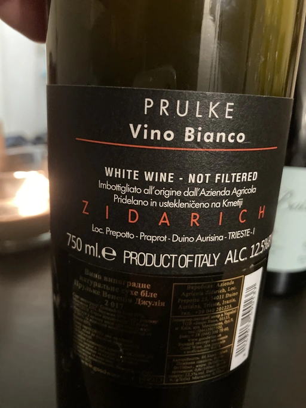

- Type
- White Still, Dry
- Producer
- Zidarich
- Vintage
- 2017
- Location
- Italy, Vino (IT)
- Grapes
- Sauvignon Blanc, Malvasia di Candia Aromatica, Vitovska
- Alcohol
- 12.5
- Sugar
- 0.1
- Price
- 1141 UAH
- Cellar
- N/A
Ratings
2022-01-11 - 7.50
Nice blend of Sauvignon Blanc, Malvasia and Vitovska. Focused bouquet: oxidation notes, nuts, flowers and apricot, clay and butter. Easy going, rather light orange. Well balanced, but lacks freshness.